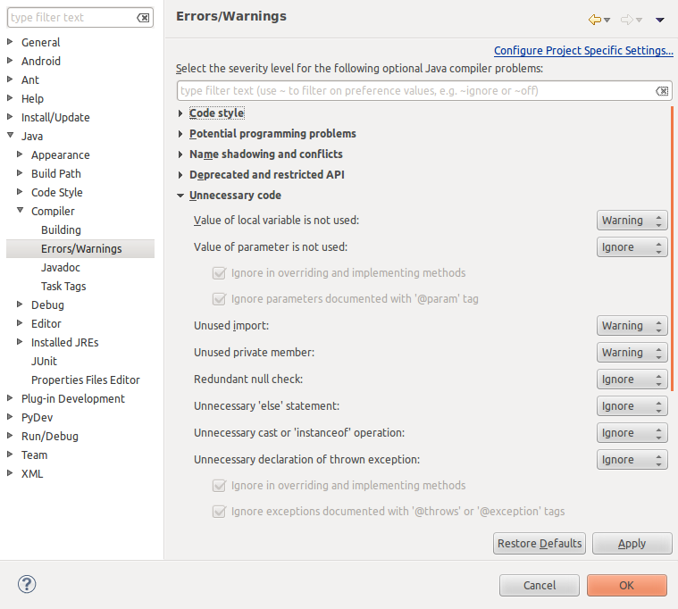

Tratamiento de errores
Introducción
Java es un lenguaje compilado, por tanto durante el desarrollo pueden darse dos tipos de errores: los de tiempo de compilación y los de tiempo de ejecución. En general es preferible que los lenguajes de compilación estén diseñados de tal manera que la compilación pueda detectar el máximo número posible de errores. Es preferible que los errores de tiempo de tiempo de ejecución se deban a situaciones inesperadas y no a descuidos del programador. Errores de tiempo de ejecución siempre habrá, y su gestión a través de excepciones es fundamental en cualquier lenguaje de programación actual.
Errores en tiempo de ejecución: Excepciones
Los errores en tiempo de ejecución son aquellos que ocurren de manera inesperada: disco duro lleno, error de red, división por cero, cast inválido, etc. Todos estos errores pueden ser manejados a través de excepciones. También hay errores debidos a tareas multihilo que ocurren en tiempo de ejecución y no todos se pueden controlar. Por ejemplo un bloqueo entre hilos sería muy difícil de controlar y habría que añadir algún mecanismo que detecte esta situación y mate los hilos que corresponda.
Las excepciones son eventos que ocurren durante la ejecución de un programa y hacen que éste salga de su flujo normal de instrucciones. Este mecanismo permite tratar los errores de una forma elegante, ya que separa el código para el tratamiento de errores del código normal del programa. Se dice que una excepción es lanzada cuando se produce un error, y esta excepción puede ser capturada para tratar dicho error.
Tipos de excepciones
Tenemos diferentes tipos de excepciones dependiendo del tipo de error que representen. Todas ellas descienden de la clase Throwable, la cual tiene dos descendientes directos:
- Error: Se refiere a errores graves en la máquina virtual de Java, como por ejemplo fallos al enlazar con alguna librería. Normalmente en los programas Java no se tratarán este tipo de errores.
- Exception: Representa errores que no son críticos y por lo tanto pueden ser tratados y continuar la ejecución de la aplicación. La mayoría de los programas Java utilizan estas excepciones para el tratamiento de los errores que puedan ocurrir durante la ejecución del código.
Dentro de Exception, cabe destacar una subclase especial de excepciones denominada RuntimeException, de la cual derivarán todas aquellas excepciones referidas a los errores que comúnmente se pueden producir dentro de cualquier fragmento de código, como por ejemplo hacer una referencia a un puntero null, o acceder fuera de los límites de un array.
Estas RuntimeException se diferencian del resto de excepciones en que no son de tipo checked. Una excepción de tipo checked debe ser capturada o bien especificar que puede ser lanzada de forma obligatoria, y si no lo hacemos obtendremos un error de compilación. Dado que las RuntimeException pueden producirse en cualquier fragmento de código, sería impensable tener que añadir manejadores de excepciones y declarar que éstas pueden ser lanzadas en todo nuestro código. Deberemos:
- Utilizar excepciones unchecked (no predecibles) para indicar errores graves en la lógica del programa, que normalmente no deberían ocurrir. Se utilizarán para comprobar la consistencia interna del programa.
- Utilizar excepciones checked para mostrar errores que pueden ocurrir durante la ejecución de la aplicación, normalmente debidos a factores externos como por ejemplo la lectura de un fichero con formato incorrecto, un fallo en la conexión, o la entrada de datos por parte del usuario.

Dentro de estos grupos principales de excepciones podremos encontrar tipos concretos de excepciones o bien otros grupos que a su vez pueden contener más subgrupos de excepciones, hasta llegar a tipos concretos de ellas. Cada tipo de excepción guardará información relativa al tipo de error al que se refiera, además de la información común a todas las excepciones. Por ejemplo, una ParseException se suele utilizar al procesar un fichero. Además de almacenar un mensaje de error, guardará la línea en la que el parser encontró el error.
Captura de excepciones
Cuando un fragmento de código sea susceptible de lanzar una excepción y queramos tratar el error producido o bien por ser una excepción de tipo checked debamos capturarla, podremos hacerlo mediante la estructura try-catch-finally, que consta de tres bloques de código:
- Bloque try: Contiene el código regular de nuestro programa que puede producir una excepción en caso de error.
- Bloque catch: Contiene el código con el que trataremos el error en caso de producirse.
- Bloque finally: Este bloque contiene el código que se ejecutará al final tanto si se ha producido una excepción como si no lo ha hecho. Este bloque se utiliza para, por ejemplo, cerrar algún fichero que haya podido ser abierto dentro del código regular del programa, de manera que nos aseguremos que tanto si se ha producido un error como si no este fichero se cierre. El bloque finally no es obligatorio ponerlo.
Para el bloque catch además deberemos especificar el tipo o grupo de excepciones que tratamos en dicho bloque, pudiendo incluir varios bloques catch, cada uno de ellos para un tipo/grupo de excepciones distinto. La forma de hacer esto será la siguiente:
try {
// Código regular del programa
// Puede producir excepciones
} catch(TipoDeExcepcion1 e1) {
// Código que trata las excepciones de tipo
// TipoDeExcepcion1 o subclases de ella.
// Los datos sobre la excepción los encontraremos
// en el objeto e1.
} catch(TipoDeExcepcion2 e2) {
// Código que trata las excepciones de tipo
// TipoDeExcepcion2 o subclases de ella.
// Los datos sobre la excepción los encontraremos
// en el objeto e2.
...
} catch(TipoDeExcepcionN eN) {
// Código que trata las excepciones de tipo
// TipoDeExcepcionN o subclases de ella.
// Los datos sobre la excepción los encontraremos
// en el objeto eN.
} finally {
// Código de finalización (opcional)
}
Si como tipo de excepción especificamos un grupo de excepciones este bloque se encargará de la captura de todos los subtipos de excepciones de este grupo. Por lo tanto, si especificamos Exception capturaremos cualquier excepción, ya que está es la superclase común de todas las excepciones.
En el bloque catch pueden ser útiles algunos métodos de la excepción (que podemos ver en la API de la clase padre Exception):
String getMessage() void printStackTrace()
con getMessage obtenemos una cadena descriptiva del error (si la hay). Con printStackTrace se muestra por la salida estándar la traza de errores que se han producido (en ocasiones la traza es muy larga y no puede seguirse toda en pantalla con algunos sistemas operativos).
Un ejemplo de uso:
try {
... // Aqui va el codigo que puede lanzar una excepcion
} catch (Exception e) {
System.out.println ("El error es: " + e.getMessage());
e.printStackTrace();
}
Nunca deberemos dejar vacío el cuerpo del catch, porque si se produce el error, nadie se va a dar cuenta de que se ha producido. En especial, cuando estemos con excepciones no-checked.
Lanzamiento de excepciones
Hemos visto cómo capturar excepciones que se produzcan en el código, pero en lugar de capturarlas también podemos hacer que se propaguen al método de nivel superior (desde el cual se ha llamado al método actual). Para esto, en el método donde se vaya a lanzar la excepción, se siguen 2 pasos:
- Indicar en el método que determinados tipos de excepciones o grupos de ellas pueden ser lanzados, cosa que haremos de la siguiente forma, por ejemplo:
public void lee_fichero()
throws IOException, FileNotFoundException
{
// Cuerpo de la función
}
Podremos indicar tantos tipos de excepciones como queramos en la claúsula throws. Si alguna de estas clases de excepciones tiene subclases, también se considerará que puede lanzar todas estas subclases.
- Para lanzar la excepción utilizamos la instrucción throw, proporcionándole un objeto correspondiente al tipo de excepción que deseamos lanzar. Por ejemplo:
throw new IOException(mensaje_error);
- Juntando estos dos pasos:
public void lee_fichero()
throws IOException, FileNotFoundException
{
...
throw new IOException(mensaje_error);
...
}
Podremos lanzar así excepciones en nuestras funciones para indicar que algo no es como debiera ser a las funciones llamadoras. Por ejemplo, si estamos procesando un fichero que debe tener un determinado formato, sería buena idea lanzar excepciones de tipo ParseException en caso de que la sintaxis del fichero de entrada no sea correcta.
NOTA: para las excepciones que no son de tipo checked no hará falta la cláusula throws en la declaración del método, pero seguirán el mismo comportamiento que el resto, si no son capturadas pasarán al método de nivel superior, y seguirán así hasta llegar a la función principal, momento en el que si no se captura provocará la salida de nuestro programa mostrando el error correspondiente.
Creación de nuevas excepciones
Además de utilizar los tipos de excepciones contenidos en la distribución de Java, podremos crear nuevos tipos que se adapten a nuestros problemas.
Para crear un nuevo tipo de excepciones simplemente deberemos crear una clase que herede de Exception o cualquier otro subgrupo de excepciones existente. En esta clase podremos añadir métodos y propiedades para almacenar información relativa a nuestro tipo de error. Por ejemplo:
public class MiExcepcion extends Exception
{
public MiExcepcion (String mensaje)
{
super(mensaje);
}
}
Además podremos crear subclases de nuestro nuevo tipo de excepción, creando de esta forma grupos de excepciones. Para utilizar estas excepciones (capturarlas y/o lanzarlas) hacemos lo mismo que lo explicado antes para las excepciones que se tienen definidas en Java.
Nested exceptions
Cuando dentro de un método de una librería se produce una excepción, normalmente se propagará dicha excepción al llamador en lugar de gestionar el error dentro de la librería, para que de esta forma el llamador tenga constancia de que se ha producido un determinado error y pueda tomar las medidas que crea oportunas en cada momento. Para pasar esta excepción al nivel superior puede optar por propagar la misma excepción que le ha llegado, o bien crear y lanzar una nueva excepción. En este segundo caso la nueva excepción deberá contener la excepción anterior, ya que de no ser así perderíamos la información sobre la causa que ha producido el error dentro de la librería, que podría sernos de utilidad para depurar la aplicación. Para hacer esto deberemos proporcionar la excepción que ha causado el error como parámetro del constructor de nuestra nueva excepción:
public class MiExcepcion extends Exception
{
public MiExcepcion (String mensaje, Throwable causa)
{
super(mensaje, causa);
}
}
En el método de nuestra librería en el que se produzca el error deberemos capturar la excepción que ha causado el error y lanzar nuestra propia excepción al llamador:
try {
...
} catch(IOException e) {
throw new MiExcepcion("Mensaje de error", e);
}
Cuando capturemos una excepción, podemos consultar la excepción previa que la ha causado (si existe) con el método:
Exception causa = (Exception)e.getCause();
Las nested exceptions son útiles para:
- Encadenar errores producidos en la secuencia de métodos a los que se ha llamado.
- Facilitan la depuración de la aplicación, ya que nos permite conocer de dónde viene el error y por qué métodos ha pasado.
- El lanzar una excepción propia de cada método permite ofrecer información más detallada que si utilizásemos una única excepción genérica. Por ejemplo, aunque en varios casos el origen del error puede ser una IOException, nos será de utilidad saber si ésta se ha producido al guardar un fichero de datos, al guardar datos de la configuración de la aplicación, al intentar obtener datos de la red, etc.
- Aislar al llamador de la implementación concreta de una librería. Por ejemplo, cuando utilicemos los objetos de acceso a datos de nuestra aplicación, en caso de error recibiremos una excepción propia de nuestra capa de acceso a datos, en lugar de una excepción propia de la implementación concreta de esta capa, como pudiera ser SQLException si estamos utilizando una BD SQL o IOException si estamos accediendo a ficheros.
Errores en tiempo de compilación
En Java existen los errores de compilación y las advertencias (warnings). Las advertencias no son de resolución obligatoria mientras que los errores sí, porque no dejan al compilador compilar el código. Es preferible no dejar advertencias porque suelen indicar algún tipo de incorrección. Además, en versiones antiguas de Java, cosas que se consideraban una advertencia han pasado a ser un error. Sobre todo para el trabajo en equipo es una buena práctica no dejar ninguna advertencia en el código que subimos al repositorio.
Eclipse nos ayuda enormemente indicando los errores y advertencias conforme escribimos. Para obligarnos a mejorar la calidad de nuestro código podemos indicar a Eclipse que incremente el nivel de advertencias/errores en gran diversidad de casos. Se puede configurar en el menú de Preferences / Java / Compiler / Errors.

Además existen herramientas más avanzadas que nos analizan el código en busca de errores de más alto nivel que los que detecta el compilador. Por ejemplo las herramientas PMD, cuyo nombre se debe a que estas tres letras suenan bien juntas, nos detectan posibles bugs debidos a try/catch o switch vacíos, código que no se alcanza o variables y parámetros que no se usan, expresiones innecesariamente complejas, código que maneja strings y buffers de manera subóptima, clases con complejidad cyclomática alta, y código duplicado. Es fácil utilizar PMD a través de su plugin para Eclipse.
Tipos de errores
Los errores en tiempo de compilación son un mal menor de la programación, ya que el compilador los detecta e indica la causa, a veces incluso proponiendo una solución. Se pueden clasificar en los siguientes tipos de error de compilación:
Errores de sintaxis: el código tecleado no cumple las reglas sintácticas del lenguaje Java, por ejemplo, falta un punto y coma al final de una sentencia o se teclea mal el nombre de una variable (que había sido declarada con otro nombre).
Errores semánticos: código que, siendo sintácticamente correcto, no cumple reglas de más alto nivel, por ejemplo imprimir el valor de una variable a la que no se ha asignado valor tras declararla:
public void funcion()
{
int a;
Console.println(a);
}
Prueba.java:12: variable a might not have been initialized
Console.println(a);
^
1 error
Errores en cascada: no son otro tipo de error, pero son errores que confunden al compilador y el mensaje que éste devuelve puede indicar la causa del error lejos de donde realmente está. Por ejemplo en el siguiente código la sentencia for está mal escrita:
fo ( int i = 0; i < 4; i++ )
{
}
Prueba.java:24: '.class' expected
fo ( int i = 0; i < 4; i++ )
^
Prueba.java:24: ')' expected
fo ( int i = 0; i < 4; i++ )
^
Prueba.java:24: not a statement
fo ( int i = 0; i < 4; i++ )
^
Pueba.java:24: ';' expected
fo ( int i = 0; i < 4; i++ )
^
Prueba.java:24: unexpected type
required: value
found : class
fo ( int i = 0; i < 4; i++ )
^
Prueba.java:24: cannot resolve symbol
symbol : variable i
location: class Prueba
fo ( int i = 0; i < 4; i++ )
^
6 errors
Otro problema que crea confusión con respecto a la localización del error son las llaves mal cerradas. Esto se debe a que el compilador de Java no tiene en cuenta la indentación de nuestro código. Mientras que el programador puede ver, a través de la indentación, dónde falta cerrar la llave de una función, bucle o clase, el compilador podría darse cuenta al terminar de leer el archivo e indicarlo ahí.
Comprobación de tipos: Tipos genéricos
En Java hay muchas estructuras de datos que están preparadas para almacenar cualquier tipo de objeto. Así, en lugar de que exista un ArrayList que reciba y devuelva enteros, éste recibe y devuelve objetos. Devolver objetos se convierte en una molestia porque hay que hacer un cast explícito, por ejemplo, Integer i = (Integer)v.get(0); cuando el programador sabe perfectamente que este array sólo podrá tener enteros. Pero el problema es mayor, este cast, si no es correcto, provoca un error en tiempo de ejecución. Véase el ejemplo:
List v = new ArrayList();
v.add("test");
Integer i = (Integer)v.get(0); // Error en tiempo de ejecución
Para evitar esta situación a partir de Java 1.5 se introdujeron los tipos genéricos, que nos fuerzan a indicar el tipo devuelto, únicamente en la declaración de la clase de la instancia. A partir de ahí se hará uso de la estructura sin tener que hacer cast explícitos. El anterior ejemplo quedaría así:
List<String> v = new ArrayList<String>();
v.add("test");
String s = v.get(0); // Correcto (sin necesidad de cast explícito)
Integer i = v.get(0); // Error en tiempo ce compilación
Los tipos básicos como int, float, etc, no se pueden utilizar en los tipos genéricos.
Definición de genéricos
Para definir que una clase trabaja con un tipo genérico, se añade un identificador, por ejemplo <E> entre los símbolos menor y mayor, al final del nombre de dicha clase. En el siguiente código se muestra un pequeño extracto de la definición de las interfaces List e Iterator:
public interface List<E> {
void add(E x);
Iterator<E> iterator();
}
public interface Iterator<E> {
E next();
boolean hasNext();
}
No sólo las interfaces pueden tener tipos genéricos, sino también las clases, siguiendo la misma sintaxis:
public class Entry<K, V> {
private final K key;
private final V value;
public Entry(K k,V v) {
key = k;
value = v;
}
public K getKey() {
return key;
}
public V getValue() {
return value;
}
public String toString() {
return "(" + key + ", " + value + ")";
}
}
Para usar la clase genérica del ejemplo anterior, declaramos objetos de esa clase, indicando con qué tipos concretos trabajan en cada caso:
Entry<String, String> grade440 = new Entry<String, String>("mike", "A");
Entry<String, Integer> marks440 = new Entry<String, Integer>("mike", 100);
System.out.println("grade: " + grade440);
System.out.println("marks: " + marks440);
Por último, también los métodos se pueden definir con tipos genéricos:
public static <T> Entry<T,T> twice(T value) {
return new SimpleImmutableEntry<T,T>(value, value);
}
Este método utiliza el tipo genérico para indicar qué genéricos tiene la clase que el método devuelve, y también utiliza ese mismo tipo genérico para indicar de qué tipo es el argumento del método. Al usar el método, el tipo podría ser indicado o podría ser inferido por el compilador en lugar de declararlo:
Entry<String, String> pair = this.<String>twice("Hello"); // Declarado
Entry<String, String> pair = twice("Hello"); // Inferido
Subtipos y comodines
Se debe advertir que, contrariamente a la intuición, si una clase Hija es subtipo (subclase o subinterfaz) de una clase Padre, y por ejemplo ArrayList es una clase genérica, entonces ArrayList<Hija> no es subtipo de ArrayList<Padre>
Existe una forma de flexibilizar el tipado genérico a través de "wildcards" o comodines. Si queremos que una clase con genéricos funcione para tipos y sus subtipos, podemos utilizar el comodín <?> junto con la palabra clave extends para indicar a continuación cuál es la clase/interfaz de la que hereda:
ArrayList<? extends Padre>
De esta manera serían válidos tanto Padre como sus clases derivadas: Hija. Supongamos ahora que Padre hereda de Abuelo y sólo queremos que sean válidas estas dos clases. Entonces utilizaremos la palabra clave super, como en el siguiente ejemplo, que permitiría Padre, Abuelo y Object, suponiendo que no hay más superclases antes de llegar a Object:
ArrayList<? super Padre>
También está permitido utilizar el comodín sólo, indicando que cualquier tipo es válido.
Genéricos y excepciones
Es posible indicar a un método o a una clase el tipo de excepción que debe lanzar, a través de un genérico.
public <T extends Throwable> void metodo() throws T {
throw new T();
}
O bien:
public class Clase<T extends Throwable>
public void metodo() throws T {
throw new T();
}
}
Lo que no es posible es crear excepciones con tipos genéricos, por ejemplo, si creamos nuestra propia excepción para que pueda incluir distintos tipos:
public class MiExcepcion<T extends Object> extends Exception {
private T someObject;
public MiExcepcion(T someObject) {
this.someObject = someObject;
}
public T getSomeObject() {
return someObject;
}
}
Tendríamos un problema con las cláusulas catch, puesto que cada una debe corresponderse con determinado tipo:
try {
//Código que lanza o bien MiExcepcion<String>, o bien MiExcepcion<Integer>
}
catch(MiExcepcion<String> ex) {
// A
}
catch(MiExcepcion<Integer> ex) {
// B
}
En este código no sería posible saber en qué bloque catch entrar, ya que serían idénticos tras la compilación debido al borrado de tipos, o "type erasure".
Teniendo eso en cuenta, entendemos por qué no funciona el código del anterior ejemplo. Tras el borrado de tipos queda así:
try {
//Código que lanza o bien MiExcepcion<String>, o bien MiExcepcion<Integer>
}
catch(MiExcepcion ex) {
// A
}
catch(MiExcepcion ex) {
// B
}